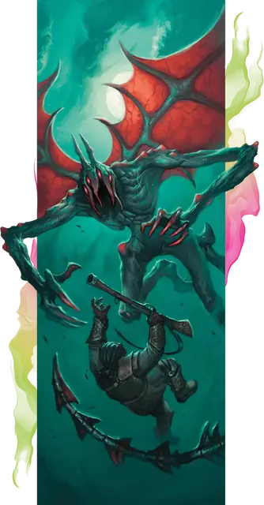

Ночная бестия
Nightgaunt
Большая Аберрация, Хаотичная Злая

Класс Защиты 16 Инициатива +8 (18)
Хиты 136 (16к10 + 48)
Скорость 30 футов, Полёта 40 футов
| мод | спас | ||
|---|---|---|---|
| СИЛ | 17 | +3 | +3 |
| ЛОВ | 20 | +5 | +8 |
| ТЕЛ | 16 | +3 | +3 |
| мод | спас | ||
|---|---|---|---|
| ИНТ | 13 | +1 | +1 |
| МДР | 16 | +3 | +6 |
| ХАР | 10 | +0 | +0 |
Сопротивление урону Психический, Электричество, Яд
Иммунитеты Истощение, Оглохший, Ослеплённый
Чувства пассивное Восприятие 13, Слепое зрение 60 футов
Языки знает Глубинную речь, но не говорит
Опасность 8 (3 900 опыта; БВ +3)
Особенности
Облёт. Ночная бестия не Провоцирует атак, когда вылетает из вражеской досягаемости.
Действия
Мультиатака. Ночная бестия совершает две атаки Когтями или Шипом в любой комбинации. Она может заменить одну из этих атак использованием Взлёта.
Когти. Бросок рукопашной атаки: +8, досягаемость 5 фт. Попадание: 14 (2к8 + 5) Рубящего урона плюс 10 (3к6) урона Ядом. Если цель — существо Среднего размера или меньше, она Схвачена (Сл освобождения от захвата 13).
Шип. Бросок дальнобойной атаки: +8, дистанция 60 фт. Попадание: 21 (6к6) Колющего урона, и цель Отравлена до конца своего следующего хода.
Взлёт. Ночная бестия взлетает вверх по прямой на расстояние вплоть до своей Скорости полёта. Если ночная бестия держит существо в захвате, она не затрачивает дополнительные футы при перемещении этого существа.
Бонусные действия
Щекотка. Спасбросок Мудрости: Сл 16, одно Схваченное ночной бестией существо. Провал: Цель Недееспособна до начала следующего хода ночной бестии.
Бонус мастерства +3
Среда обитания Горы, Подземье
Сокровища Личные, Инструментальные
Ночная бестия
Безликий сеятель страха из Дальнего Предела
Ночные бестии — непостижимые, похожие на горгулий отродья, которые парят над подземными горными хребтами и в небесах чуждых миров. Эти охотники печально известны тем, что похищают жертв и сбрасывают их с невероятной высоты. Те, кому удалось вырваться из лап ночной бестии, описывают прикосновение её острых как бритва когтей как «щекотку» — но такую, от которой вопит каждое нервное окончание.
Голова ночной бестии представляет собой гладкий рогатый полип. Перед тем как нанести смертельный удар, бестия раскрывает свою голову надвое, и из глубины пробивается мертвенное, нездешнее свечение.